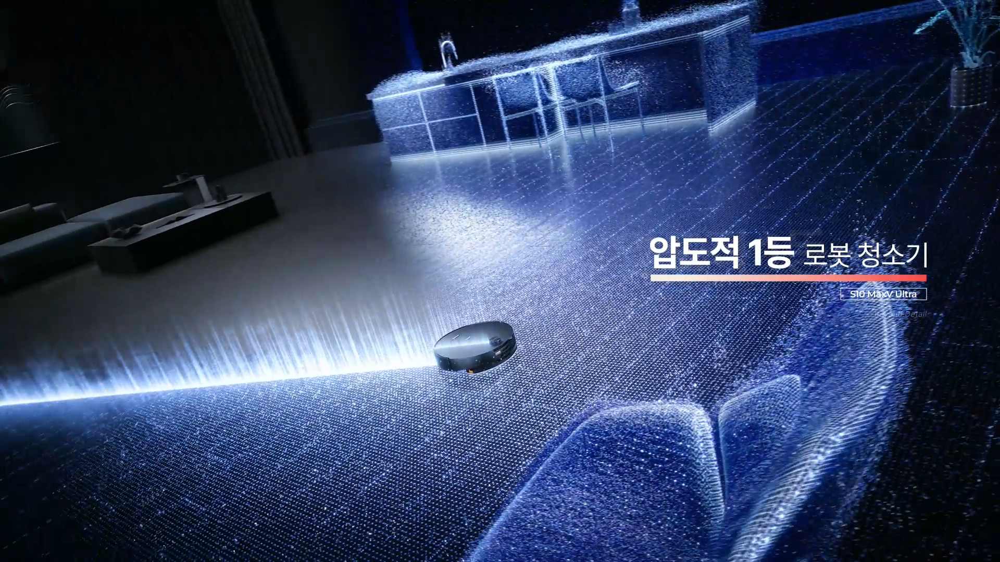
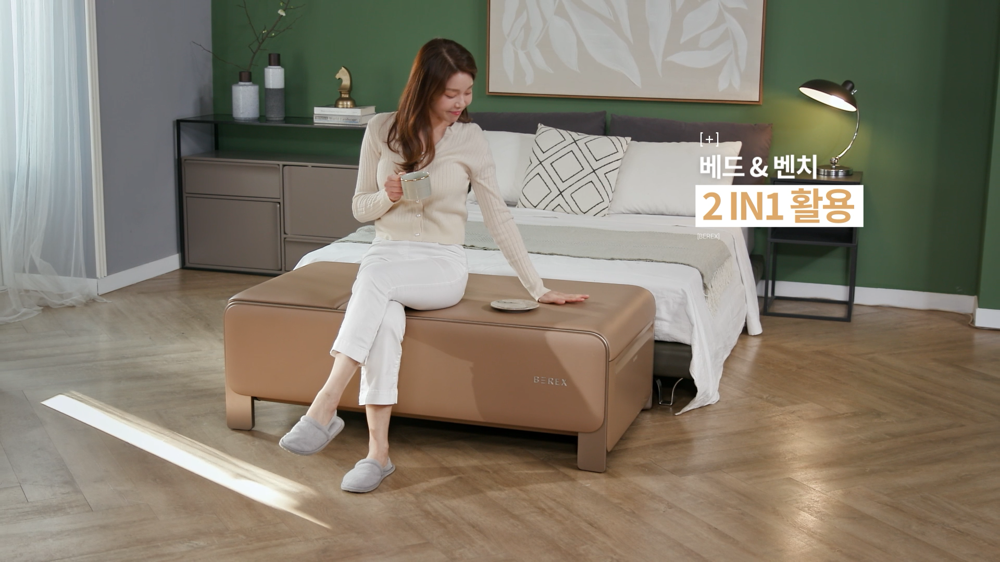
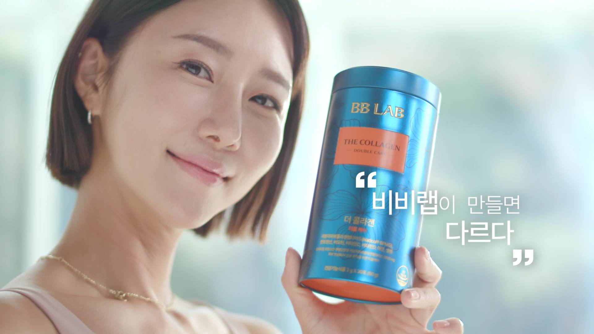
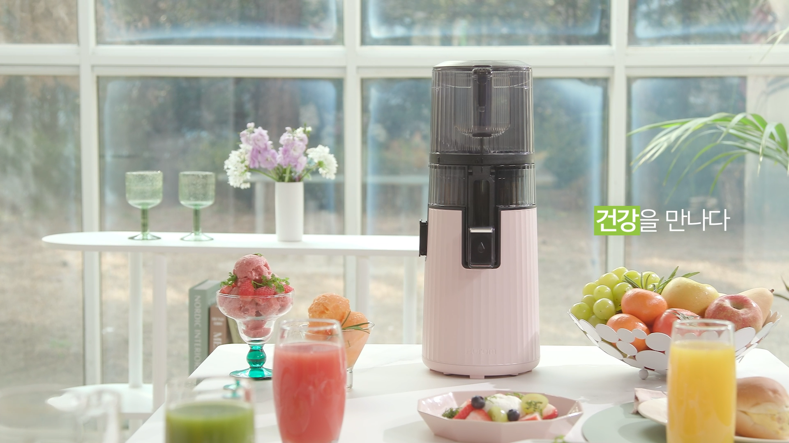
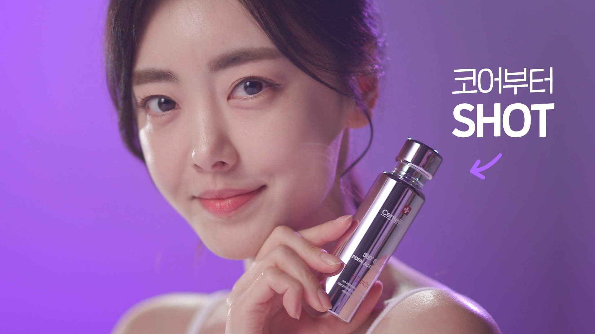

다이슨 인서트,
|16년간 100여 편 제작
2011년부터 현재까지 인서트를 제작한 다이슨. 16년간 바뀌지 않은 믿음의 신뢰. 제품 기술과 사용 장면을 홈쇼핑 판매 흐름에 맞춰 구성한 장기 제작 사례입니다.

로보락 인서트,
|판매 영상 제작
생활 동선과 청소 성능을 한눈에 보여준 홈쇼핑 구성

코웨이 비렉스,
|제품 경험 중심 인서트
10년을 함께한 코웨이. 정수기부터 시작하여 매트리스, 비데, 의류건조기까지 다양한 라인업들을 마이다스가 함께 했습니다

뉴트리원 비비랩,
|브랜드 인서트
건강기능식품의 핵심 메시지를 짧고 명확하게 전달한 사례


휴롬 제품 소개,
|인서트
제품의 건강한 사용 장면과 브랜드 이미지를 함께 전달한 제작 사례


동국제약 센텔리안,
|뷰티 인서트
브랜드 신뢰와 제품 사용감을 함께 보여준 뷰티 판매 영상
Production Flow
제품 분석부터 촬영, 편집,
채널별 재가공까지
제품 분석셀링포인트 정리방송 구성안촬영편집·자막납품·활용
비슷한 인서트 영상이 필요하신가요?